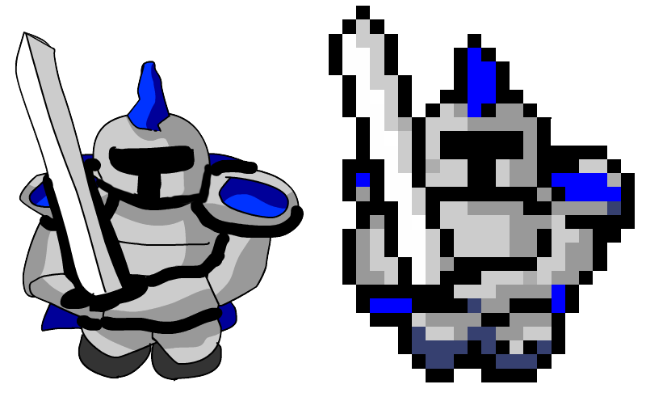

Turn any image into fancy pixel-art.
Introducing Pixelator
Pixelator is a smart software to convert images into pixel art sprites and cover arts. With Pixelator you can use any source picture to easily generate Pixelated graphics for games or posters.
What is it good for?
Making good pixel art for a game can sometimes be hard, especially when you have limited time and resources. Pixelator help you generate quality pixel-art sprites using the following 3 techniques:
- Generate: convert real images into pixelated sprites to generate lots of content, and fast.
- Reuse: turn different art styles into the pixel-art style that match your game, and unlock otherwise unusable resources.
- Create: paint in your own style of choice and convert it into pixel-art. You no longer need advanced pixel-art skills to create pixel art!
- Prototype: create rapid prototyping and placeholders to express your vision before building the final assets.
For example, check out this ugly doodle I made in 5 minutes with Flash, and how it turned into a decent pixel-art RTS unit:

Examples
Best way to demonstrate the power of Pixelator is via examples. Please have a look at some of the awesome things you can do with it:


More examples can be seen in the examples gallery.
How does it work
Pixelator is a pipline-like tool that process the image using a set of smart filters. One filter handles the pixelation, another applies colors palette, the next smooth the result and so on..
All the filters are highly customisable and can be turned on and off, so Pixelator can handle a large variety of source images, from every style and size, and produce vastly different styles of pixel art. You can achieve almost any pixel-art style imaginable with the right configurations.
When you download Pixelator, you get a comfy windows application with a slick UI and configuration sliders. It looks pretty much like this:
In addition to the windows application, you also get an executable you can run from shell with all possible arguments. This allows you to automate processing and respond to changes in source files.
When you edit an image in the UI application, there's always a bottom text that shows the exact command needed to reproduce this configuration using the shell command.
Do I need any post processing?
No. All the examples you see above are without any post processing - what you see is what you get.
However, the pixelation process is not 100% accurate and its not unthinkable that you'd want to highlight or fix some pixels, especially around eyes and eyebrows area that usually needs to be pixel-perfect.
And what about pre-processing?
if you want clean outlines, its important to remove the background before processing the picture in Pixelator (the outline filter works best with transparent background). Note however that you don't have to be super accurate about the background, since its all going to be pixelated anyway ;)
Start Pixelating Now!
You can Download Pixelator and start using it right now for free.
However, if you want to use it for commercial projects you need to Purchase a license (one-time payment).